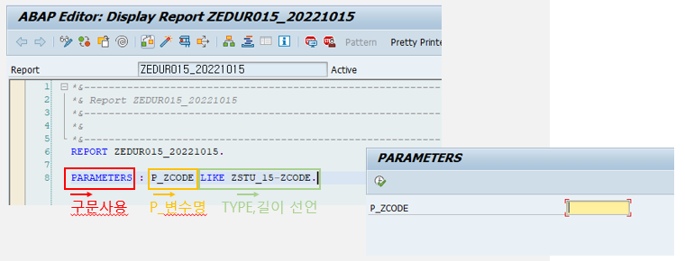

20221018 - Parameters
Parameters
변수와 동일한 메모리 형태를 가진 선언문으로서, 전역변수처럼 프로그램 내에서 사용 가능 (parameter 변수 명 길이: 8자까지)
프로그램 실행 시 값을 사용자가 입력
DATA 문의 VALUE (값 고정)과 달리 화면에 DISPLAY되어 실행마다 값 변경 가능
PARAMETERS: 구문 사용



PARAMETERS: P_ZCODE LIKE ZEDU1_001-ZID.
DATA: BEGIN OF GS_ORDER.
INCLUDE TYPE ZEDU1_001.
DATA: END OF GS_ORDER.
DATA: GT_ORDER LIKE TABLE OF GS_ORDER.
SELECT * FROM ZEDU1_001 INTO CORRESPONDING FIELDS OF TABLE GT_ORDER WHERE ZEDU1_001~ZID = P_ZCODE.
LOOP AT GT_ORDER INTO GS_ORDER.
WRITE:/ GS_ORDER-ZID, GS_ORDER-ZNAME.
ENDLOOP.


TYPE 설정
변수의 타입을 선언

소수점 설정
소수점 이하의 자리수를 정의하며 적용 가능한 변수형은 P TYPE

Default 값 설정
DATA 문의 VALUE 절과 동일하게 변수의 초기값 설정

소문자 설정
소문자 입력도 가능

필수값 설정
필수적으로 값을 입력받고, 입력하지 않으면 오류로 처리

숨김처리 설정
화면에서 숨김처리, 프로그램을 실행하여도 화면에 나타나지 않지만 다른 변수와 동일하게 값 지정 가능

변수길이설정
화면에 보이는 변수의 길이를 정의 (선언에는 10자리이지만, 값을 5로 하면 화면에는 5자리만 보임)

SEARCH HELP
도움말 키


CHECKBOX
CHECKBOX 형태로 변수의 값을 입력


RADIO BUTTON
RADIO BUTTON의 형태로 변수의 값을 입력


SELECTION-SCREEN BEGIN OF BLOCK B1 WITH FRAME.
PARAMETERS: P_ZCODE TYPE ZSTU_15-ZCODE VISIBLE LENGTH 9,
P_ZGUBUN LIKE ZSTU_15-ZGUBUN,
Z_CHECK AS CHECKBOX.
SELECTION-SCREEN END OF BLOCK B1.
SELECTION-SCREEN BEGIN OF BLOCK B2 WITH FRAME.
SELECTION-SCREEN BEGIN OF LINE.
PARAMETERS: P_R1 RADIOBUTTON GROUP R1 DEFAULT 'X'.
SELECTION-SCREEN POSITION 3.
SELECTION-SCREEN COMMENT (10) FOR FIELD P_R1.
PARAMETERS: P_R2 RADIOBUTTON GROUP R1.
SELECTION-SCREEN POSITION 20.
SELECTION-SCREEN COMMENT (10) FOR FIELD P_R2.
SELECTION-SCREEN END OF LINE.
SELECTION-SCREEN END OF BLOCK B2.
PARAMETERS DB 조건

In-class practice

SELECTION-SCREEN BEGIN OF BLOCK B1 WITH FRAME.
PARAMETERS: P_ID LIKE ZEDU15_001-ZID OBLIGATORY.
SELECTION-SCREEN END OF BLOCK B1.
SELECTION-SCREEN BEGIN OF BLOCK B2 WITH FRAME.
PARAMETERS: P_JDATE LIKE ZEDU15_001-Z_JDATE.
SELECTION-SCREEN END OF BLOCK B2.
SELECTION-SCREEN BEGIN OF BLOCK B3 WITH FRAME.
PARAMETERS: P_R1 RADIOBUTTON GROUP R1 DEFAULT 'X',
P_R2 RADIOBUTTON GROUP R1.
SELECTION-SCREEN END OF BLOCK B3.
DATA: BEGIN OF GS_ORDER.
INCLUDE TYPE ZEDU15_001.
DATA: END OF GS_ORDER.
DATA: GT_ORDER LIKE TABLE OF GS_ORDER.
DATA: GV_AVG TYPE I.
PERFORM CALC_AVG USING P_ID.
WRITE:/ P_ID, GV_AVG.
*BREAK-POINT.
CLEAR: GV_AVG.
IF P_JDATE = '00000000'.
SELECT AVG( Z_SUM ) FROM ZEDU15_001 INTO GV_AVG WHERE ZID = P_ID.
WRITE:/ P_ID, GV_AVG.
ELSE.
SELECT AVG( Z_SUM ) FROM ZEDU15_001 INTO GV_AVG WHERE ( ZID = P_ID ) AND ( Z_JDATE = P_JDATE ).
WRITE:/ P_ID, P_JDATE, GV_AVG.
ENDIF.
IF P_R1 = 'X'.
SELECT * FROM ZEDU15_001 INTO CORRESPONDING FIELDS OF TABLE GT_ORDER WHERE Z_STATUS = '1'.
ELSEIF P_R2 = 'X'.
SELECT * FROM ZEDU15_001 INTO CORRESPONDING FIELDS OF TABLE GT_ORDER WHERE Z_STATUS = '2'.
ENDIF.
DATA: BEGIN OF GS_STU.
INCLUDE TYPE ZSTU_15.
DATA: END OF GS_STU.
DATA: GT_STU LIKE TABLE OF GS_STU.
SELECT * FROM ZSTU_15 INTO CORRESPONDING FIELDS OF TABLE GT_STU WHERE ZCODE = P_ID.
LOOP AT GT_STU INTO GS_STU.
IF GS_STU-ZGUBUN = 'M'.
GS_STU-ZTEL = '12341234'.
ELSE.
GS_STU-ZTEL = '56785678'.
ENDIF.
MODIFY GT_STU FROM GS_STU.
ENDLOOP.
BREAK-POINT.
FORM CALC_AVG USING PF_ID LIKE P_ID.
SELECT AVG( Z_SUM ) FROM ZEDU15_001 INTO GV_AVG WHERE ZID = P_ID.
ENDFORM.